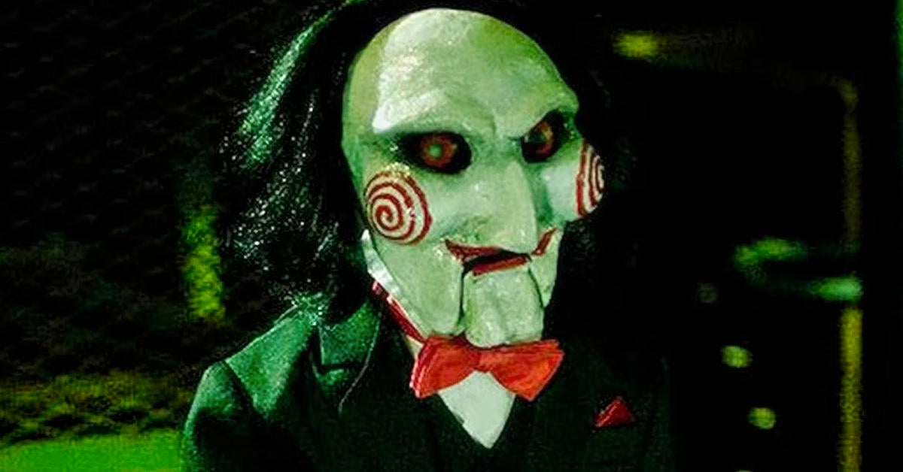

Saw X - El Juego Del Miedo
Trailer:
Sinopsis:
John Kramer (Tobin Bell) está de vuelta. La entrega más perturbadora
de la franquicia de SAW explora el
capítulo nunca antes contado del juego
más personal de Jigsaw. Toma lugar entre los eventos ocurridos de
SAW I
(El juego del miedo) y SAW II (El juego del miedo 2), un enfermo y
desesperado John viaja a México
por un arriesgado y experimental procedimiento
médico con la esperanza de encontrar milagrosamente una
cura para su cáncer
solo para descubrir que toda la operación es una estafa y defrauda a los más
vulnerables. Armado de un nuevo propósito, el infame asesino serial regresa a su trabajo,
intercambiando
papeles con los estafadores en su característico estilo visceral a través
de tortuosas, trastornadas e
ingeniosas trampas.